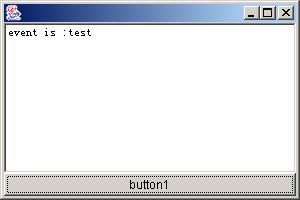

用Java事件处理机制实现录制回放功能（续）
然后，再在派生类中重载dispatchEvent()方法就可以截获所有的系统事件，包括用户输入事件。下面一段代码给出一个操纵EventQueue的实例：
import java.awt.*;
import java.awt.event.*;
public class GenerateEventQueue
extends Frame implements ActionListener
{
Button button1 = new Button();
TextField textField1 = new TextField();
public GenerateEventQueue()
{
try {
jbInit();
}
catch(Exception e)
{
e.printStackTrace();
}
}
public static void main(String[] args)
{
GenerateEventQueue generateEventQueue
= new GenerateEventQueue();
}
private void jbInit() throws Exception
{
button1.setLabel("button1");
button1.addActionListener(this) ;
textField1.setText("textField1");
this.add(button1,
BorderLayout.SOUTH);
this.add(textField1,
BorderLayout.CENTER);
EventQueue
eq=getToolkit().getSystemEventQueue() ;
eq.postEvent(new ActionEvent(button1,
ActionEvent.ACTION_PERFORMED,"test" )) ;
addWindowListener(new WinListener());
setBounds(100,100,300,200);
setVisible(true);
}
public void actionPerformed(ActionEvent e)
{
textField1.setText("event is
:"+e.getActionCommand()) ;
}
}
class WinListener extends WindowAdapter
{
public void windowClosing(WindowEvent we)
{
System.exit(0) ;
}
}
运行结果如下图所示：

http://www.pconline.com.cn/pcedu/empolder/gj/java/0508/pic/05-08-24-java-2.jpg
在文本域中首先出现的是"event is：test",这是因为首先得到处理的是EventQueue对象发送到系统事件队列上的ActionEvent。
下面的代码简单说明了如何捕获事件：
import java.awt.EventQueue;
import java.awt.*;
import java.util.*;
public class MyQueueEvent extends EventQueue
{
//定义EventQueue的子类
public MyQueueEvent()
{
}
public static void main(String[] args)
{
SimpleExample.main(new String[]{null}) ;
MyQueueEvent myQueueEvent1
= new MyQueueEvent();
Toolkit.getDefaultToolkit().
getSystemEventQueue().push(myQueueEvent1) ;
}
//在这里重载事件分发的方法
public void dispatchEvent(AWTEvent ae)
{
if(ae.getSource()
instanceof javax.swing.JButton)
System.out.println
("My apture:"+((javax.swing.JButton)
ae.getSource()).getText()) ;
super.dispatchEvent(ae);
}
这个程序可以打印出当前应用的所有的事件，可以将这些事件中选出你需要的事件保存当然你还需要解析该控件的特征。在上面加黑部分的代码，打印事件源控件的名称。
除此之外，还可以通过实现java.awt.event. AWTEventListener接口实现对事件的捕获。这个侦听器接口可以接收Component or MenuComponent以及它们的派生类在整个系统范围内所分发的事件，AWTEventListeners只是被动的监控这些事件。
如果要监控系统事件，除了要实现接口，还要用Toolkit的addAWTEventListener方法注册这个侦听器。
下面我们来看一个实例：
import java.awt.AWTEvent;
import java.awt.Frame;
import java.awt.Toolkit;
import java.awt.Window;
import java.awt.event.AWTEventListener;
import java.awt.event.WindowEvent;
import java.util.ArrayList;
import java.lang.ref.WeakReference;
public class MyAWTEventListener
implements AWTEventListener
{
private static MyAWTEventListener
s_singleton = null;
//保证该类只被初始化一次
public static
MyAWTEventListener getInstance()
{
if(s_singleton==null)
{
s_singleton=new MyAWTEventListener();
}
return s_singleton;
}
private MyAWTEventListener()
{
//注意下面这行代码，如果没有这行代码，
将无法接收到系统分发的事件
// 下面代码在注册时，
只请求了接收WINDOW_EVENT_MASK事件
//但实际上，
你可以接收其他AWTEvent中定义的事件类型
Toolkit.getDefaultToolkit().addAWTEventListener
(this,
AWTEvent.COMPONENT_EVENT_MASK
);
}
/*
这就是接口方法的实现
*/
public void eventDispatched
(final AWTEvent theEvent)
{
processEvent(theEvent);
}
private static void processEvent
(final AWTEvent theEvent)
{
System.out.println
(theEvent.getSource() ) ;
//打印事件源
switch (theEvent.getID())
{
case WindowEvent.WINDOW_OPENED:
//System.out.println
(((Frame)theEvent.getSource()).getTitle() ) ;
case WindowEvent.WINDOW_ACTIVATED:
case WindowEvent.WINDOW_DEACTIVATED:
case WindowEvent.WINDOW_CLOSING:
default: break;
}
}
}
3.3 Java事件回放
事件的回放其实比较简单了，比如我们现在记录的是frame1下的jButton1点击事件回放。看下面一段简单的程序，只要点一下jButton1，就在控制台打印一次"click me"的字符串。
import java.awt.*;
import javax.swing.*;
import java.awt.event.*;
public class Frame1 extends JFrame
{
private JButton jButton1
= new JButton();
public Frame1()
{
try {
jbInit();
}
catch(Exception e)
{
e.printStackTrace();
}
}
public static void
main(String[] args)
{
Frame1 frame1 = new Frame1();
frame1.setVisible(true) ;
}
private void jbInit()
throws Exception
{
jButton1.setText("jButton1");
jButton1.addActionListener
(new java.awt.event.ActionListener()
{
public void actionPerformed
(ActionEvent e)
{
jButton1_actionPerformed(e);
}
});
this.setTitle("Test");
this.getContentPane().add(jButton1,
BorderLayout.CENTER);
}
void jButton1_actionPerformed
(ActionEvent e)
{
System.out.println("click me") ;
}
}
下面是回放的程序，在下面的程序中用到了java.awt.Robot类，这个类通常用来在自动化测试或程序演示中模拟系统事件，在某些需要控制鼠标或键盘的应用程序中这个类也是很有用，这个类主要的目的就是为方便的实现Java的GUI自动化测试平台。
在事件回放时，我们同样需要该类来模拟生成系统的事件，完成记录的操作的回放，在下面的代码中，给出了一个简单的例子。
import java.awt.*;
import javax.swing.*;
import java.awt.event.*;
public class TestReplay extends Thread
{
public static void
main(String[] args)
{
try{
//启动要回放的应用程序
Frame1.main(new String[]{null}) ;
//等应用程序启动后延迟3秒再进行回放
Thread.currentThread().sleep(3000) ;
Robot robottest=new Robot();
robottest.waitForIdle();
//根据标题名获取当前应用的主窗体，
在本例中为"test"
Frame jframe=getFrame("test");;
//根据给定的窗体和窗体中要
find的控件的名称来获取控件的引用
JButton jbtn=getButton(jframe,"jButton1");
//将鼠标移到控件所在的位置
robottest.mouseMove
(jbtn.getLocationOnScreen().
x+jbtn.getWidth()/2
,jbtn.getLocationOnScreen().
y+jbtn.getHeight()/2) ;
//在控件所在位置，生成鼠标点击事件
robottest.mousePress
(InputEvent.BUTTON1_MASK ) ;
robottest.mouseRelease
(InputEvent.BUTTON1_MASK ) ;
}catch(Exception ee){
ee.printStackTrace() ;
}
}
//获得标题为title的frame
private static Frame
getFrame(String title)
{
Frame[] jframes=(Frame[])
JFrame.getFrames();
for(int i=0;i
{
if(jframes[i].getTitle().
equalsIgnoreCase(title))return jframes[i];
}
return null;
}
//获取某一个frame下的某个名为jButton1的控件
private static JButton
getButton(Frame jf,String text)
{
/*注意下面这行代码，因为实例比较简单
只有ContentPane一个Container类型的控件，
如果在JFrame中有多个Container控件
//的话，必须进行递归处理，搜索出所有的控件
*/
Component[] coms=((JFrame)jf).
getContentPane().getComponents();
for(int i=0;i
{
if(!(coms[i] instanceof
JButton))continue;
if(((JButton)coms[i]).
getText().equalsIgnoreCase(text))
return (JButton)coms[i];
}
return null;
}
public void run(){
}
}
该程序运行完，你会发现在控制台同样打印出了：
"click me"的字符串说明事件被正确回放了。
当然还可以通过直接操纵系统事件队列实现输入事件的回放。先通过记录下的窗口/组件名获得对应窗口引用，然后重构鼠标/键盘事件，最后将重构的事件直接放入系统事件队列，由分派线程执行后续的事件分派工作。
还需要解决关键问题如何能根据窗口名称获得其引用。这里还是可以通过系统事件队列来实现的，因为Java程序在新建/删除一个容器时都会向系统事件队列发出一个Containerevent事件，其中包含了对该容器的引用。
所以，事件回放器在载入被测测试程序后便监视系统队列，截获所有的Containerevent事件。如果新建容器，便获得新建Container的引用。因为所有的Container都实现了getComponets()，可以返回所有该容器所包含的组件或容器，只需要保存到一个HashMap结构中，需要时检索出来就可以了。
该过程所用到的知识，其实在上面都有提到而且在实际引用中，既然Robot已经帮我们完成许多事情，也没有必要自己再去重构一个鼠标或键盘事件了，不过有兴趣的朋友也可以去试试。
4、结束语
随着我国软件业的发展，软件测试技术作为软件质量保证的重要环节越来越受到重视，而在基于GUI的应用中采用自动化测试工具可以提高软件测试的有效性和效率，特别在回归测试中可以大大减少人力投入，还可以提高测试脚本的复用。
因此，软件自动测试平台开发已经成为软件测试的一个重要领域。本文介绍了基于Java的GUI应用的自动测试平台开发需要的基本但关键的捕获、回放功能，所有相关系统开发其实都离不开本文说的方法。